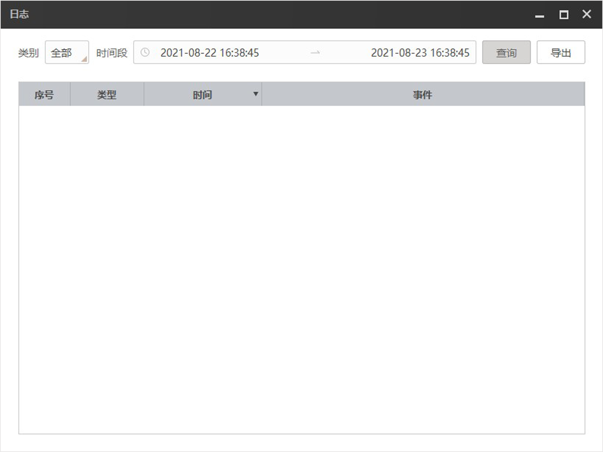
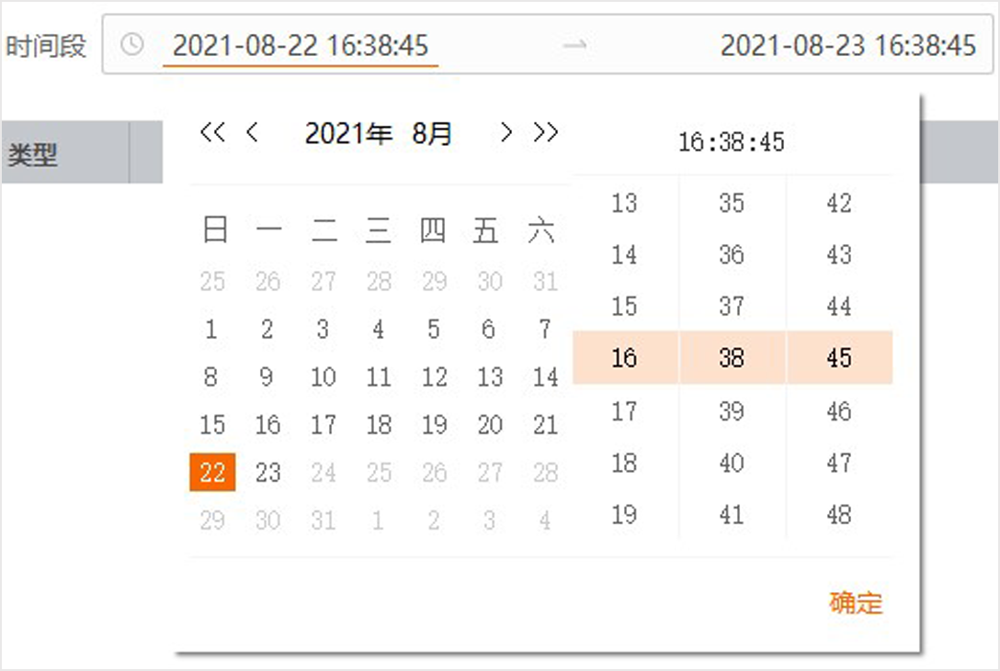
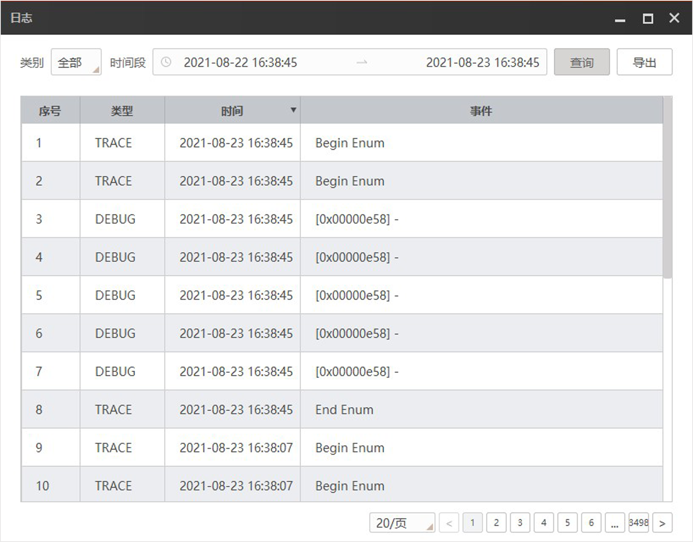

zh-CN
日志
日志处可查询并导出日志信息，主要为使用ISPTool时的基本操作信息。
通过菜单栏的工具进入日志，如下图所示。

图 1 工具界面
根据实际需求选择需查询的日志类别，可选
全部
、
跟踪
、
调试
、
信息
、
告警
和
错误
。
可选操作：
设置需查询日志的时间段，如下图所示。左侧选择年月日，右侧通过滑动选择时分秒，数值停留在橙色区域方有效，完成设置后单击
确定
即可。
说明
查询时间段默认为PC当前时间的24小时内。

图 2 时间段查询
单击
查询
即可查询ISPTool日志，如下图所示。

图 3 查询结果
可选操作：
单击
导出
可将查询的日志信息以json文件保存到本地。
菜单栏
设置
工具
日志
快速色彩标定
帮助